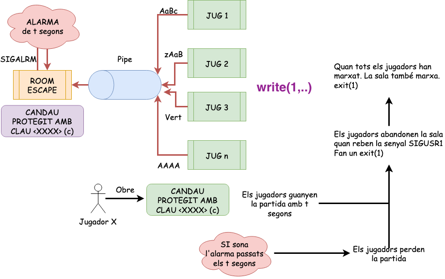
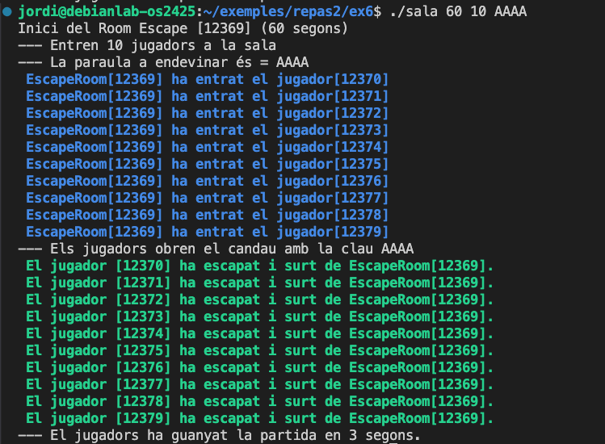
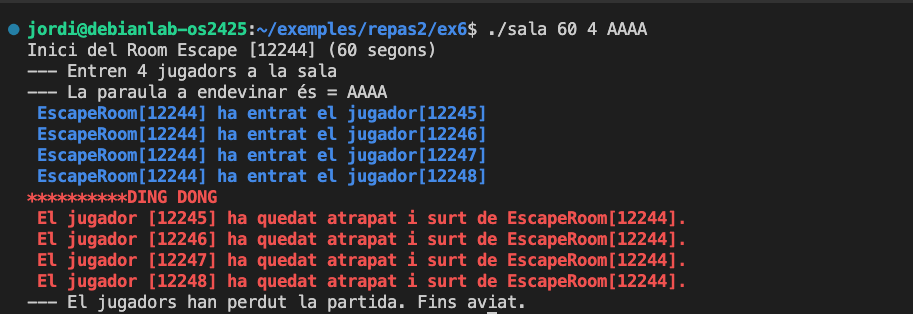
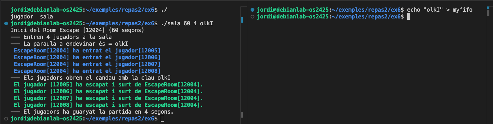

Escape Room entre processos amb Pipes
Unitat 3 · Sistemes Operatius (SO)
🎯 Objectius
- Crear i gestionar processos fills amb
fork(). - Comunicar processos amb pipes i FIFOs.
- Utilitzar senyals (
SIGALRM,SIGUSR1). - Sincronitzar i finalitzar processos.
🏗️ Descripció
En aquest laboratori us proposem implementar un joc senzill d’Escape Room utilitzant processos i comunicació entre ells mitjançant pipes. Per fer-ho, haureu de crear un procés pare que gestioni la partida i diversos processos fills que representin els jugadors. La idea és que els jugadors intentin endevinar una clau secreta abans que s’acabi el temps.

Per simplificar, la clau serà una cadena de 4 caràcters (per exemple, ABCD) i els jugadors generaran combinacions aleatòries fins a trobar la correcta o que s’acabi el temps.
El programa acceptarà tres arguments:
- Temps màxim per a la partida (en segons).
- Nombre de jugadors (processos fills).
- Clau secreta (cadena de 4 caràcters).
El programa finalitzarà quan un jugador encerti la clau o quan s’acabi el temps.
Els jugadors acertaran la clau enviant-la al procés pare mitjançant un pipe i guanyaran si ho aconsegueixen abans que s’acabi el temps.

Si el temps s’esgota, el procés pare enviarà un senyal als processos fills per indicar que la partida ha acabat.

A més, implementarem la lògica del jugador i del sala (pare) en fitxers separats. El pare (sala.c) esperarà la finalització dels seus fills (jugador.c) per acabar la partida.
🧩 jugador.c
El codi jugador el teniu a continuació amb algunes seccions marcades com a TODO que heu de completar. Si compileu i executeu el codi tal qual està ara, veureu que cada jugador escriu un missatge a la sortida estàndard indicant que ha entrat a la sala. Heu de completar el codi per generar la clau aleatòria i esperar el senyal de finalització. La vostra missió és completar les seccions marcades com a TODO.
#include <time.h>
#include <stdlib.h>
#include <stdio.h>
#include <signal.h>
#include <string.h>
#include <unistd.h>
int main(int argc, char *argv[]) {
//TODO: Els misstges de log no han d'anar a stdout sinó a stderr
char s[100];
sprintf(s, "--- Jugador %d ha entrat a la sala\n", getpid());
write(1, s, strlen(s));
// TODO: Gestionar senyal SIGUSR1 per acabar el procés
int n = 4;
char pass[n];
srand(time(NULL) + getpid());
// TODO: Generar 4 caràcters aleatoris (per ex. 'A' + rand() % 26)
// TODO: Enviar els caràcters al pare mitjançant pipe
sprintf(s, "--- La clau generada pel jugador %d és: %s\n", getpid(), pass);
write(1, s, strlen(s));
//TODO: Esperar senyal de finalització (SIGUSR1)
return 0;
}Aquest codi s’executa aparentment bé, però amaga un error subtil: utilitza una variable no inicialitzada per imprimir la clau generada. Això pot provocar comportaments erràtics, valors aleatoris o fins i tot fallades d’execució segons l’estat de la memòria. Aquest tipus d’error és molt freqüent en programes amb punters i comunicació entre processos, i pot ser molt difícil de detectar només amb proves manuals.
Per comprovar si el vostre programa pateix aquest problema, utilitzeu l’eina Valgrind, que permet rastrejar errors de memòria com:
- Ús de variables no inicialitzades.
- Lectura o escriptura fora dels límits d’un buffer.
- Fuites de memòria (malloc sense free).
- Errors en la gestió de punters.
Executeu el vostre programa amb Valgrind de la següent manera:
valgrind ./jugadorA la sortida, Valgrind us indicarà exactament quina línia accedeix a memòria no inicialitzada o allibera memòria incorrectament.
Per instal·lar Valgrind en sistemes basats en Debian o Ubuntu:
sudo apt-get install valgrindDurant tot el laboratori, executeu sempre el vostre codi amb Valgrind abans de donar-lo per bo. Un programa que funciona però genera errors de memòria no es considera correcte.
🧩 sala.c
#include <stdlib.h>
#include <stdio.h>
#include <signal.h>
#include <string.h>
#include <unistd.h>
#include <sys/types.h>
#include <sys/wait.h>
#include <errno.h>
char *color_blue = "\033[01;34m";
char *color_end = "\033[00m";
char *color_red = "\033[01;31m";
char *color_green = "\033[01;32m";
char *args[] = {"jugador", "jugador", NULL};
// TODO: Funcionalitat per gestionar l'alarma (SIGALRM)
int main(int argc, char *argv[]) {
int fd[2];
char s[100];
int *pids;
int tempsPartida, numJugadors;
char *clau;
if (argc < 4) {
fprintf(stderr, "Ús: %s tempsPartida numJugadors clau\n", argv[0]);
exit(1);
}
//TODO: Llegir arguments
//TODO: Definir l'acció per a la senyal SIGALRM
sprintf(s, "Inici del Room Escape [%d] (%d segons)\n", getpid(), tempsPartida);
write(1, s, strlen(s));
sprintf(s, "--- Entren %d jugadors a la sala\n", numJugadors);
write(1, s, strlen(s));
sprintf(s, "--- La clau secreta és: %s\n", clau);
write(1, s, strlen(s));
/* TODO 2: Crear processos fills (jugadors) amb fork() */
alarm(tempsPartida);
//TODO 3: Esperar respostes dels jugadors mitjançant pipe
// Si algun jugador encerta la clau, mostrar missatge de victòria i acabar
//TODO 5: Gestionar finalització en funció de si s'ha encertat la clau o ha sonat l'alarma
// TODO 6: Mostrar missatge final segons resultat
exit(0);
}🥚 Extensió: Ou de pasqua amb FIFO
Canvia el programa per utilitzar un FIFO en lloc d’un pipe. D’aquesta manera, un procés extern pot ajudar els jugadors enviant la clau correcta.
- Crea un FIFO amb
mkfifo(). - Utilitza aquesta FIFO per escriure i llegir les claus generades pels jugadors enlloc del pipe.
- Allibera el FIFO al final del programa amb
unlink().
Per testar el FIFO, pots utilitzar la comanda echo des d’un altre terminal per enviar la clau correcta.
echo "AAAA" > myfifo
📄 Makefile
Prepareu un Makefile per compilar els fitxers sala.c i jugador.c. Permeteu compilar, netejar i executar el programa amb diferents paràmetres.
📚 Exercicis addicionals
Canvia el missatge que envia cada jugador per una estructura amb punters:
typedef struct { pid_t pid; char *clau; } missatge_jugador;Modifica el programa per permetre l’enviament de pistes als jugadors des del procés pare. Per exemple:
- Els jugadors poden enviar
SIGUSR2per demanar una pista. - El pare respondrà enviant un missatge pel pipe amb una pista. Per exemple, la primera lletra de la clau és ‘A’. Cada pista permet reduir l’espai de cerca. Únicament es poden donar \(n-1\) pistes on \(n\) és la longitud de la clau.
- Els jugadors poden enviar
Implementa un scape room competitiu on cada jugador és un procés independent que competeix per trobar la clau abans que els altres. Al final, de la partida, s’ha de mostrar un ranking amb el nombre d’intents i el temps emprat per cada jugador.